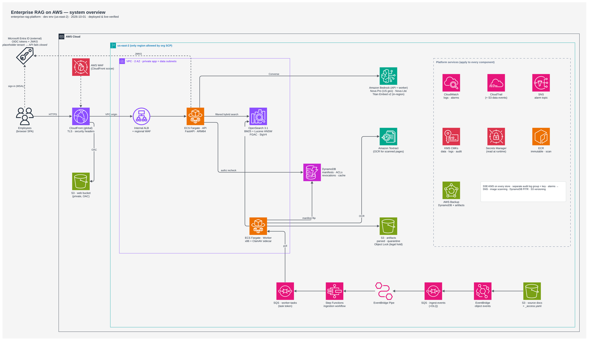
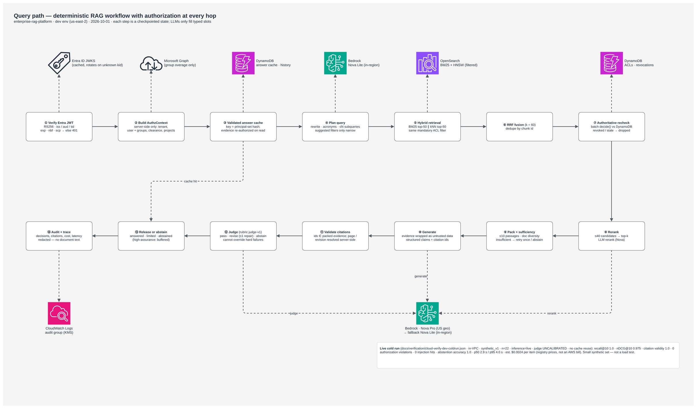
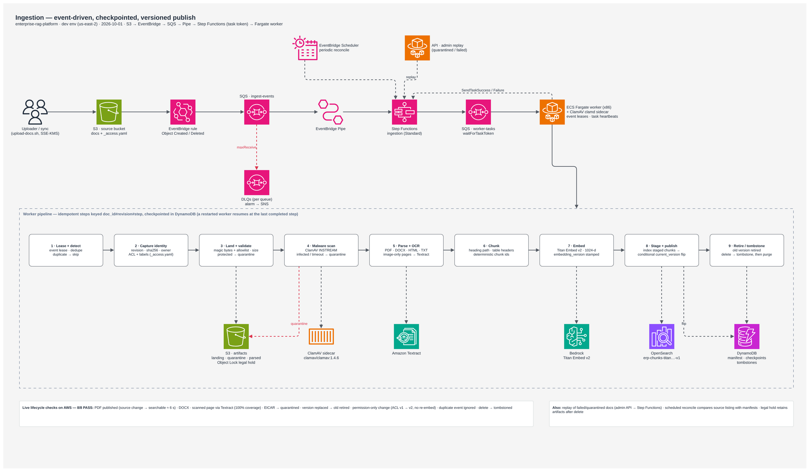
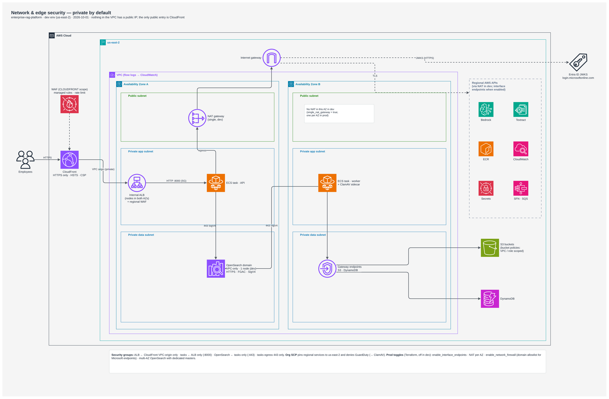
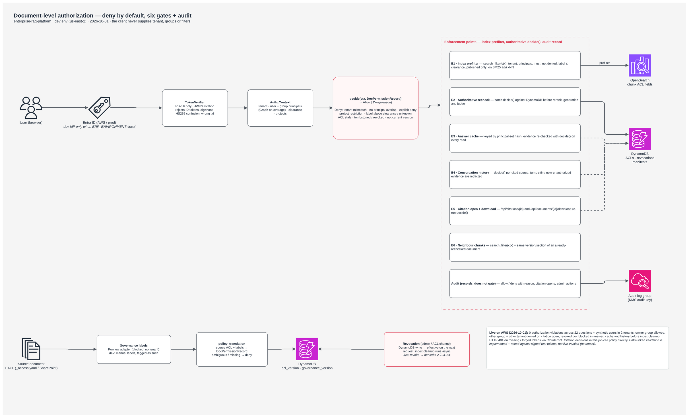
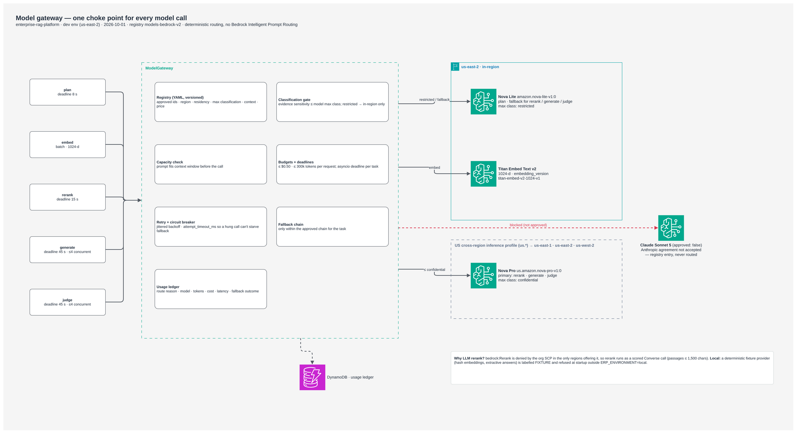
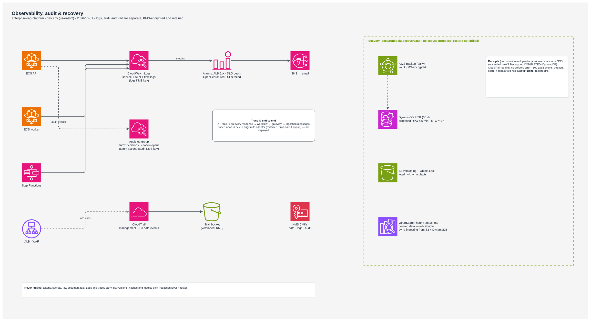
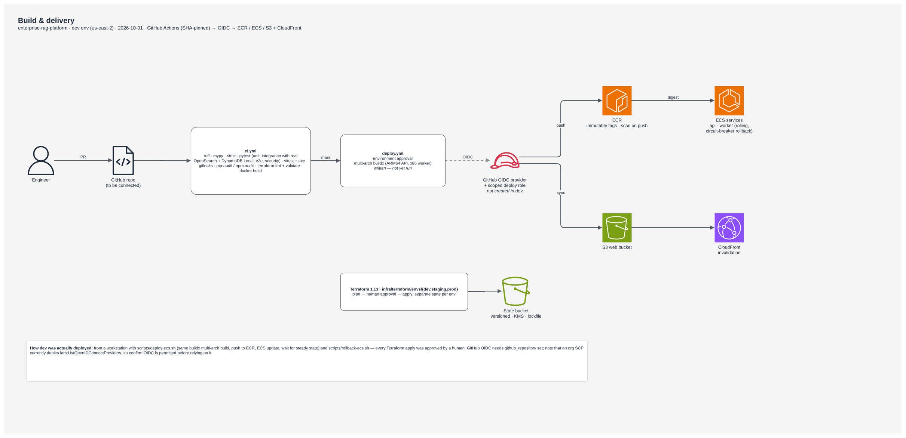
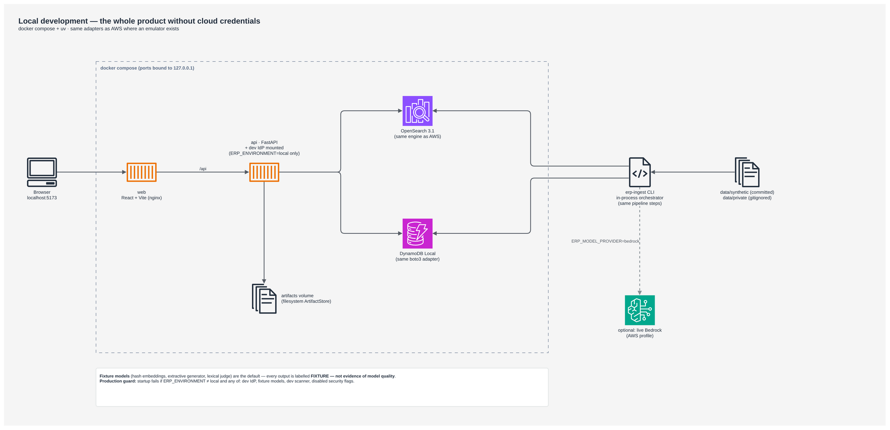
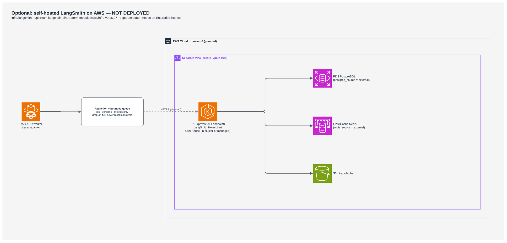

The index can be behind.
A revoked document may still exist in search. Removing it asynchronously cannot be the only protection.
Recheck DynamoDB before using evidence.
A permission-aware RAG platform on AWS. Built end to end—from document ingestion and private infrastructure to evidence-grounded answers that respect who is asking.
Enterprise documents carry access rules, revisions and sensitivity labels. A useful retrieval system has to preserve those constraints while documents, permissions and models change.
A revoked document may still exist in search. Removing it asynchronously cannot be the only protection.
Recheck DynamoDB before using evidence.
Caches and conversation history can retain information a user is no longer allowed to see.
Reauthorize every reuse path.
Files can contain malware, incomplete extraction or instructions aimed at the model. A plausible answer is insufficient evidence.
Scan inputs. Validate claims. Abstain when needed.
Six connected areas of engineering, with implementation links for a closer look. The scope covers user experience, data lifecycle, access control, model operations and AWS delivery.
RS256/JWKS tokens, tenant boundaries, group resolution, explicit denies, clearance and project entitlements. Rechecks protect cache, history and direct document access.
Explore implementation ↗Filtered BM25 and vector search, reciprocal rank fusion, reranking, table-aware context, sufficiency checks and server-resolved citations.
Explore implementation ↗PDF, DOCX, HTML and text; ClamAV and Textract; deterministic IDs, checkpoints, duplicate handling, staged versions, quarantine, replay and deletion.
Explore implementation ↗A versioned Bedrock registry controls approved routes, classification ceilings, fallback, concurrency, deadlines, request budgets and estimated usage.
Explore implementation ↗Modular Terraform for private Fargate services, OpenSearch, nine DynamoDB tables, encrypted storage, event orchestration, edge controls and recovery configuration.
Explore implementation ↗React/TypeScript research UI, FastAPI endpoints, citation inspection, feedback, container builds, CI definitions, deploy scripts and operational runbooks.
Explore implementation ↗Ten architecture views explain how the components fit together. Select a view, then open the full-resolution drawing to inspect the details.

CloudFront and a private origin connect the application to Fargate, OpenSearch, DynamoDB and Bedrock. An independent event path ingests and publishes source documents.
Diagram figures are backed by files in docs/verification; recovery targets are proposed. Use the preserved reports for the metrics quoted here. Entra, SharePoint, Purview and optional LangSmith are not live-verified integrations.

02 / Query & answer ↗
03 / Document ingestion ↗
04 / Network security ↗
05 / Authorization ↗
06 / Model gateway ↗
07 / Observe & recover ↗
08 / CI/CD delivery ↗
09 / Local development ↗
10 / Optional LangSmith ↗A deterministic state machine bounds model behavior. Every transition has a purpose, and evidence can lead to an answer, a limited result or an explicit abstention.
Verify the token. Build permissions on the server. Revalidate history and cached evidence before reuse.
Run filtered BM25 and vector search. Fuse candidates, recheck the authoritative record, then rerank and pack.
Use approved evidence as untrusted input. Validate structured claims and resolve citation metadata on the server.
High-assurance mode waits for judgment and allows one repair. Deterministic failures cannot be overruled by the model.
The retained in-VPC evaluation used live Bedrock against managed OpenSearch and DynamoDB. The corpus and principals were synthetic. Its results are a development snapshot.
| Live evaluation metric | Recorded result |
|---|---|
| Questions / scenario checks passed | 22 / 7 of 7 |
| Recall@10 | 1.0000 |
| nDCG@10 | 0.9754 |
| Citation validity | 100% |
| Observed authorization violations | 0 |
| Observed injection-string hits | 0 |
| Abstention accuracy | 1.0000 |
Deployment exposed issues that local tests could not. The repository records both the design choices and the fixes needed to make the AWS ingestion path work.
OpenSearch holds a derived ACL copy. DynamoDB holds current permissions and versions. Revocation takes effect on subsequent policy checks without waiting for an index purge.
Use Ohio, Nova and Titan under the recorded account constraints. Use Converse-based reranking and a ClamAV sidecar where the preferred managed alternatives were unavailable.
Stage new chunks, conditionally flip the current-version record, then publish and retire. The read-time version check protects against partial publication and old revisions.
Encrypted SQS needed an EventBridge KMS grant. Artifact writes needed an explicit SSE-KMS header. Both were deployment lessons captured in configuration and tests.
One NAT gateway, one OpenSearch node and disabled interface endpoints reduce dev overhead. The documentation explicitly avoids presenting that footprint as highly available production infrastructure.
The recovery runbook calls out revocations lost after a restore point. Reapply those decisions before reopening traffic. Recovery is part of the authorization design.
Different parts of a platform mature at different speeds. This is the status supported by the retained reports and source review—not a claim of current uptime.
Event-driven ingestion, ClamAV, Textract OCR, Titan embeddings, OpenSearch/DynamoDB, live retrieval and answers, private edge health and rejection paths.
See verification ↗Entra sign-in, Graph group overage, SharePoint permissions and Purview classification. Optional self-hosted LangSmith is defined separately and not deployed.
See integration matrix ↗Human-reviewed model quality, judge calibration, concurrency and resilience testing, image remediation, restore drills, independent security review and staging/prod deployment.
See readiness checklist ↗The repository includes the implementation, synthetic data, evaluation harness, diagrams and runbooks. Local development works with fixture models and no cloud credentials.
# Clone the project git clone https://github.com/abh2050/enterprise-rag-aws.git cd enterprise-rag-aws # Install and start the local stack make install make up # Open http://localhost:5173 # Run deterministic pipeline tests make test
Local answers are explicitly marked FIXTURE. They exercise the pipeline, not live-model quality. This portfolio is a separate static documentation page.
Sign in as Alice from Acme finance and ask about the New York travel per diem. Switch to Bob from engineering and repeat the question, then ask about tier-1 recovery objectives. Switch to Carol from Globex to demonstrate the tenant boundary. Open citations and explain why cached answers and history are reauthorized. Use the security tests to demonstrate revocation; no admin UI is implied.
A case study in building the application and understanding the infrastructure, permissions, failure modes and evidence behind it.